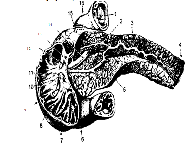
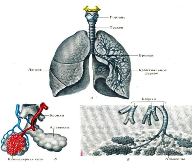

2-MAVZU: ICHKI ORGANLAR. OVQAT HAZM QILISH VA NAFAS OLISH SISTEMASI
REJA.
1. Og’iz va unda joylashgan a’zolarining tuzilishi.
2. Qizilo’ngach va oshqozonning tuzilishi.
3. Ingichka ichak va yo’g’on ichakning tuzilishi
Tayanch tushunchalar: parenximatoz a’zolar, o’pka va buyraklar, jigar, oshqozon, oshqozon osti bezi, seroz parda, ektoderma, endoderma, mezinxima, sut tishlar, doimiy tishlar,chuvalchaksimon o’simta, so’lak bezlari, lunj, og’iz daxlizi,
SPLANXNOLOGIYA-ICHKI A’ZOLAR HAQIDAGI BO’LIM
Ichki a’zolar deb, odam organizmining ko’krak, qorin, chanoq bo’shliqlarida joylashgan a’zolarga aytiladi. Bu bo’shliqlarda ovqat hazm qilish a’zolari, nafas tizimi a’zolari, siydik chiqarish va jinsiy a’zolar joylashgan. Ichki a’zolar bo’shliqlarda joylashsa ham, tashqi muhit bilan o’z aloqasini saqlab qoladi. Ichki a’zolarni tuzilishiga ko’ra naysimon va parenximatoz a’zolarga bolish mumkin. Parenximatoz a’zolar o’z vazifasini bajaradigan maxsus to’qimalardan hosil bo’ladi. Parenximatoz a’zolar guruhiga jigar, oshqozon osti bezi, o’pka va buyrak kiradi. Naysimon a’zolar turli hajmdagi bo’shliqlardan tashkil topgan bolib, ularning devori 4 qavat bo’ladi. Ko’krak, qorin va chanoq bo’shlig’ining ichki yuzasi va shu bo’shliqlardagi a’zolarning tashqi yuzasi seroz pardalar- tunica serosa bilan qoplangan. Seroz pardasi bo’lmaydigan ba’zi a’zolarning tashqi yuzasi biriktiruvchi to’qima qavati - adventitia bilan qoplangan bo’ladi (halqum, qizilo’ngach).
HAZM A’ZOLARI TIZIMI
Hazm a’zolari ovqat moddasini mexanik maydalash, kimyoviy moddalar ta’sirida parchalash, qon-gayoki limfaga so’rilishini ta’minlash, chiqindi moddalarni tashqi muhitga chiqarish kabi vazifalarni bajaradi. Hazm tizimining ko’pchilik qismi devori ikki qavatli nayni eslatadi. Ichki nay a’zolarning shilliq qavatidan hosil bo’lsa, tashqi nay mushak va seroz pardadan hosil bo’ladi. Bu ikki nay orasida biriktiruvchi to’qimadan iborat, qon tomirlarga boy bo’lgan shilliq osti qavati joylashgan. Bu ikki nay nisbatan harakat qilish xususiyatiga ega. Shilliq osti qavati to’qimalari va mushak tolalari burama shaklida joylashganligidan og’iz bo’shlig’i sohasidan to’g’ri ichak tarafiga harakatlanadi. Ko’pgina hazm qilish a’zolarining devori to’rt qavatdan tashkil topadi: 1) ichki - shilliq qavat; 2) shilliq osti qavati; 3) mushak qavati; 4) tashqi - seroz parda qavati. A’zo devoridagi har bir qavat hosilaning qalinligi, shu a’zoning vazifasiga bog’liq bo’ladi. Ba’zi a’zoda mushak qavati yaxshi taraqqiy etgan bo’lsa (me’da), boshqa a’zolarda shilliq qavat rivojlangan (ingichka ichak) bo’ladi.
Og’iz bo’shlig’i.
Og’iz bo’shlig’i (cavum oris) ovqat hazm qilish kanalining boshlang’ich qismidir. U og’iz teshigidan boshlanadi. Og’iz teshigi esa pastki va yuqori lab bilan o’ralgan bo’ladi. Lablar muskul-teri tuzilmasidan iborat bo’lib, tashqi tomondan teri, ichki tomondan shilliq parda bilan o’ralgan. Teri ostida kapillyar qon tomirlari ko’rinib turadi. Shuning uchun ham lablar pushti rangda bo’ladi. Labning bu qismida tuk, shilimshiq bezlar bo’lmay, kam miqdorda er bezlari bor. Lunjlarning ichki sathi bilan tishlar o’rtasida yoysimon, torgina og’iz dahlizi bor. Og’iz bo’shlig’i yuqoridan qattiq va yumshoq tanglay, pastdan jag’-til osti muskullari va til, oldindan, yog’ tomonlaridan milk va tishlar bilan chegaralangan bo’ladi. Og’iz bo’shlig’i shilimshiq, parda bilan o’ralgan.
Og’izning ikki tomonida lunjlar bo’lib, bular muskuldan tuzilgan. Lunjlarning ichki yuzasi shilliq, parda bilan, tashqarisi teri bilan qoplangan. Lunjning shilliq qavatida mayda bezlar bo’lib, ular lunjni namlab turadi. Yirik quloq oldi so’lak bezining yo’li lunjlarga ochiladi.
Og’iz bo’shlig’ining yuqori tomoni qattiq tanglay bilan qoplangan bo’lib, u orqada yumshoq tanglayga aylanadi. Qattik, tanglay yuqorigi jag’ning tanglay o’simtasi va tanglay suyagining gorizontal plastinkasi hisobiga hosil bo’ladi. Uning ustki tomoni suyakka maxkam birikkan shilimshiq parda bilan o’ralgan.
T i l
Til (lingua) og’iz bo’shlig’i tagida joylashgan. U muskulli organ bo’lib, xususiy til muskuliga va skeletga birikkan muskullarga ega. Tilning uchi, tanasi va ildizi bo’ladi.
Til ildizi bilan til osti suyagiga birikkan bo’lib, uchi erkin. Tilning xususiy muskuli til-tilosti, til-bigizsimon o’simta, til iyak, til-tanglay muskullari bilan birga birikkan bo’ladi. Til-til osti muskuli til osti suyagi va hiqildoq ustligidan boshlanib tilda tugaydi. U qisqarganda tilni orqaga va pastga tortadi. Til-bigizsimon o’simta muskuli chakka suyagining bigizsimon o’simtasidan boshlanib, ikkinchi tomondagi shu muskul bilan til ildizi oldida birikib, halqa hosil qiladi. U qisqarganda tilni yuqoriga va orqaga tortadi. Til-iyak muskuli pastki jag’ning iyak do’ngchasidan boshlanib, tilda tugaydi. U qisqarganda tilni pastga va oldinga tortadi. Tilning xususiy muskullari esa til ichida joylashgan bo’lib tolalari ko’ndalang, uzunasiga, yuqoriga va pastga yo’nalgan bo’ladi. Til skelet va xususiy muskullari yordamida serharakatchan bo’lgan organdir. Til harakati tufayli ovqat so’lak bilan aralashadi, ovqat luqmasi hosil bo’ladi va yutiladi. Bundan tashqari, til so’zlarni to’g’ri talaffuz qilishda ishtirok etadi. Til qattiq tanglay bilan birgalikda so’rishda, ya’ni og’izda manfiy bosim hosil qilishda muhim ahamiyatga ega.
Tilning ustki qismidagi shilimshiq qavatda to’rt xil kichik so’rg’ich joylashgan. Uning tanasi bilan oldingi tomonida ipsimon so’rg’ichlar, ularning orasida qo’zi-qorinsimon so’rg’ichlar joylashgan. Til ildiziga yaqinroqda, uning chetlarida bargsimon, o’rtasida novsimon so’rg’ichlar joylashgan. Bu so’rg’ichlarda tam bilish reseptorlari joylashgan. Tilning uchki qismi shirinni, ikki yoni nordon va sho’rni, orqa qismi ko’proq achchiqni sezadi. Tilning tagidagi shilimshiq qavatda so’rg’ichlar bo’lmaydi. U erda limfa pufaklari joylashgan. Til tagida shilimshiq pardadan tuzilgan til tutqichi bo’lib, u tilni pastga tortib turadi. Til tutqichi asosining ikki yonida jag’ osti va til osti so’lak bezlarining yo’li ochiladi.
T i sh
Tishlar (denies) yuqorigi va pastki jag’ suyagidagi Alveola o’simtalari chuqurchasida joylashadi. Tishlar 32 ta bo’lib, 16 tasi pastki jag’da, 16tasi yuqorigi jag’da qo’yidagi tartibda joylashadi.
Jag’ning yarmida 4 ta kesuvchi, 2 ta qoziq, 4 ta kichik oziq va 6ta katta oziq tishlar bo’ladi. Ikkala jag’ning bir tomonidagi tishlarni quyidagi:
|
2 1 2 3 2 1 2 3 |
formula bilan ifodalash mumkin.
Har bir tishning koronkasi, bo’yni va ildizi bo’lib, ildizi bilan jag’ suyaklaridagi chuqurchalarga joylashadi. Koronkasi erkin ko’rinib turadi. Ildizi bilan koronkasi orasida milk bilan o’ralgan toraygan qism - tish bo’yni joylashadi.
Tish dentindan tuzilgan bo’lib, koronkasi yupqa, pishiq emal bilan qoplangan. Emal organizmdagi eng pishiq to’qima bo’lib, kattiqligi kvarsga teng keladi. Tishning ildizi sement deb ataladigan suyak to’qima bilan qoplangan. Uning uchi teshik bo’lib, undan tishning ichiga (pulpaga) qon tomirlar, nerv tolalari o’tadi.
Kurak tishlar 8 ta bo’lib, ovqatni kesib olishga moslashgan, ularning koronkasi yassi to’rtburchak shaklda bo’ladi. Ularning ildizi bitta bo’lib, qonus shaklida. Kemiruvchilarda bu tishlar yaxshi rivojlangan.
Qoziq tishlar 4ta, uzun uchli bo’lib, juda mustahkam. Bu tishlar yirtqichlarda juda yaxshi rivojlangan. Kichik oziq tishlar 8ta bo’lib, ularning koronkasi yumaloqlashib, ustki yuzasida 2ta dungcha hosil qiladi. Ildizining uchi ham 2ga ajrala boshlayda.
Katta oziq tishlar yoki jag’ tishlar 12ta bo’lib, ularning koronkasi kub shaklida, ustki yuzasi 4ta do’ngcha hosil qiladi. Ildizi yuqoridagilarda 3 ayri, pastdagilarda 2 ayri bo’ladi. Bu tishlar ovqatni maydalashga moslashgan bo’lib, kavsh qaytaruvchi hayvonlarda juda yaxshi rivojlangan.
Odamning 6-8 oyligidan to 2- 2,5 yoshigacha sut tishlari chiqadi. Ular 7 yoshgacha saqlanadi. Sut tishlari 20ta. Ularning formulasi
2 1 2
2 1 2
Sut tishlarida katta oziq tishlar bo’lmaydi. Sut tishlari 7 yoshdan 12-13 yoshgacha doimiy tishlar bilan almashinadi. Doimiy tishlar 20-25 yoshgacha chiqib tugaydi. Oxirgi jag’ tish 25-30 yoshda chiqadi, u aql tishi deb ataladi.
So’lak bezlari
Og’iz bo’shlig’ida tarqoq holdagi mayda va to’plangan yirik so’lak bezlari bo’lib, ular har doim so’lak ishlab chiqarib, og’izni namlab turadi va ovqatning qisman bo’lishida ishtiroq etadi.
Tapqoq holdagi mayda bezlar labda, lunjda joylashgan. Yirik bezlarga quloq oldi, jag’ osti va til osti bezlari kiradi.
Quloq oldi so’lak bezi (glandula parotis) so’lak bezlarining eng yirigi bo’lib, vazni 25-30g gacha etadi. U tashqi quloq tagidagi teri ostida joylashgan. Uning so’lak yo’li chaynash muskulining ustidan o’tib, og’iz dahliziga, yuqorigi 2-jag’ tish sathida ochiladi. Bu bez 7 bo’lakdan iborat bo’lib, qon tomirlar va nervlar bilan yaxshi ta’minlangan.
Jag’ osti so’lak bezi (glandula submandibularis) bo’yinning yuqori qismida, pastki jag’ ostida joylashgan. Uning vazni 15g gacha etadi. So’lak chiqarish yo’li til ostiga, til tutqichining 2 yoniga ochiladi.
Til osti so’lak bezi (glandula sublingualis) til ostida joylashgan bo’lib, so’lak chiqarish yo’li jag’ osti so’lak bezining so’lak yo’li bilan birga yoki alohida til tutqichi asosiga ochiladi.
H A L Q U M
Halqum (pharynx) voronka shaklidagi muskulli organdir. Halqum og’iz bo’shlig’ini qizilo’ngachga, burun bo’shlig’ini hiqildoqqa birlashtirib turadi. Halqumning kengaygan yuqori qismi kalla suyagi asosida joylashgan. Toraygan pastki qismi VI bo’yin umurtqasi oldida qizilo’ngachga o’tadi. Halqum ixtiyoriy muskullardan tuzilgan bo’lib, ichi shilimshiq qavat bilan qoplangan. Halqum 3 ga: burun-halqum, og’iz-halqum, va hiqildoq-halqum qismlarga bo’linadi. Burun-halqum xoanlar orqali burun bo’shlig’i bilan, og’iz-halqum tomoqning yuqori qismi orqali og’iz bo’shlig’iga qo’shiladi. Hiqildoq-halqum hiqildoqqa qo’shiladi. Halqumning yuqori qismida 6ta bodom bezi bo’ladi. Halqumda ovqat yutish va nafas olish yo’llari bir-biri bilan kesishadi. Bu nafas organlari oldingi ichakdan rivojlanganligining dalilidir.
Ovqat yutish vaqtida kichik tilcha ko’tarilib, burun bo’shlig’ini, hiqildoq ustligi pastga tushib, hiqildoqni berkitadi va ovqat og’izdan tomoqqa, undan qizilqngachga o’tadi.
Q I Z I L O’ N G A CH
Qizilo’ngach (oesophagus) halqumni me’da bilan birlashtiruvchi muskul naydan iborat. Uning bo’yi 25sm bo’lib, 6-bo’yin umurtqasidan boshlanib, XI ko’krak umurtqasigacha davom etadi. Qizilo’ngach traxeyaning orqasida joylashgan. U 3 qismdan: bo’yin, ko’krak va qorin qismlardan iborat. Qizilo’ngach devori uch qavatdan tuzilgan bo’lib, tashqisi - seroz, o’rtasi - muskul, ichkisi – shiliq pardadan iborat. Seroz qavat qizilo’ngachni tashqi tomondan o’rab turuvchi biriktiruvchi to’qima bo’lib, boshqa organlarga birikib turadi. O’rta qavatning yuqorigi 1/3 qismi ixtiyoriy, pastki 2/3 qismi ixtiyorsiz muskul to’qimalaridan tuzilgan. Ichki qavat serburma epiteliy to’qimasidan tuzilgan. SHilliq qavat qizilo’ngachni unga tushgan ba’zi qattiq ovqat luqmalaridan himoya qiladi. Qizilo’ngachning boshlanish qismi traxeyaning bronxlarga bo’lingan qismiga to’g’ri kelgan joy va diafragmadan o’tayotgan qismi bir oz toraygan bo’ladi.
OSHQOZON (ME’DA)
Me’da (gaster) ovqat hazm qilish organlarining eng keng qismi bo’lib, chap tomonda qovurg’alar ostida, diafragmaning tagida, 1/4 qismi ungda yotadi. Me’daning shakli ovqat bilan to’lishiga qarab, shoxsimon, noksimon bo’ladi yoki retorta kolbasiga o’xshaydi. Uning hajmi ham ovqat bilan to’lishiga qarab o’zgarib turadi. Katta odamlarda uning hajmi 1-3 l, uzunligi o’rtacha 25-30 sm, eni 12-14 sm bo’ladi. Me’daning bir oz turtib chiqqan, pastga qaragan tomoni katta aylanasi, o’ng va yuqori tomonga qaragan kichik aylanasi ajratiladi. Me’daning kirish qismi kardiy, tubi fundus, chiqish qismi pillorus deyiladi. Me’daga kirish qism bog’lag’ichlar bilan diafragmaga, chiqish (privratnik) qismi orqa qorin devoriga birikkan bo’lib, qolgan qismi erkin harakat qiladi. Me’da devori uchqavatdan: shilliq, muskulli va seroz qavatdan tuzilgan bo’ladi. SHilliq qavat pushti rangda bo’lib, juda ko’p burma hosil qilgan, ustki yuzasi bir qavat prizmasimon epiteliy ^hujayralari bilan qoplangan. SHilliq qavat tagida juda ko’p miqdorda naychasimon bezlar joylashgan. Bu qavatdagi bezlarning umumiy soni odamda 40 millionga etadi. Bu bezlar me’daning tubi (fundal), kardiy, pilorik bezlar deb nomlanadi. Fundal bezlar 35 milliondan ortiq bo’lib, asosiy va qoplab turuvchi bezlarga bo’linadi.
ICHAKLAR
Ichaklar (intestipum) ovqat hazm qilish organlarining eng uzuni bo’lib, odamda 7-7,5 m bo’ladi, Ichaklarda ovqat moddalar xazm bo’lishda (parchalanishda) davom etadi va qonga so’riladigan holdagi eritma hosil qiladi. Ichaklar bir necha xil: ingichka ichak, yo’g’on ichak, ko’richak, o’nikki barmoq ichak va xakozo bo’ladi. Eng uzuni ingichka ichak bo’lib, uzunligi 5-6 m ga etadi. Yo’g’on ichak 1,3-1,5 m uzunlikda bo’ladi.
I N G I CH K A I CHA K
Ingichka ichak (intestinu tenue) 3 qismga: o’nikki barmoq ichak (25 sm), och ichak (taxminan
4.3-rasm. Ingichka ichak devorning tuzilishi.
2,5-3 m) va yonbosh ichak (3-3,5 m) ga bo’linadn. Ingichka ichakning diametri 2,5-3 sm bo’ladn. O’nikki barmoq, ichak (duodenum) eng kalta qism bo’lib, taqa shaklida, u qorin bo’shlig’ining orqa kismida joylashgan, oldingi qorin pardasi bilan o’ralgan bo’ladi. O’nikki barmoq ichakning I bel umurtqasi oldida joylashgan yuqori ko’ndalang qismi, III bel umurtqasmi oldida tushuvchi qismi va pastki ko’ndalang qismi ajratiladi. O’nikki barmoq ichak ovqat hazm qilish kanalining eng muhim qismidir. Bu ichakka oshqozon osti bezining shira yo’li, jigarning o’t yo’li ochiladi.
ME ‘ D A O S T I B E Z I
Me’da osti bezi (pancreas) tanadagi yirik bezlardan biri hisoblanadi, u II bel umurtqasi sathida me’daning orqasida, qorin orqa devorining yonida joylashgan. Bu bez tuzilishiga ko’ra, Alveola naychali bezlarga kiradi, vazni 60-80 g, uzunligi 20 sm. U uch qismdan: boshcha, tana va dum qismdan iborat. Bezning boshchasi o’nikki barmok, ichak egriligiga joylashgan bo’lib, dumi ichak buyrak va taloqqa taqaladi. Qorin pardasi bezni faqat old va past tomondan o’rab turadi. Me’da osti bezining yo’li o’nikki barmoq ichakning orqa devoridagi umumiy o’t yo’li bilan birgalikda ochiladi. Me’da osti bezi ovqat hazm qilishda muhim rol o’ynaydigan shira ishlab chiqaradi. Uning orolchalar deb nomlangan alohida hujayralari insulin gormoni ishlab chiqaradi. Bezning bu funksiyasi ichki sekresiya funksiyasi deb ataladi. Ishlab chiqarilgan gormon qonga qo’yiladi. Shunday qilib, me’da osti bezi aralash - ham tashqi, ham ichki sekresiya bezlariga kiradi.
Ichakning shilliq qavatida vorsinkalar orasida bo’rtiklar bo’ladi, ular kriptalar deb ataladi. Bu qism ichak epiteliy (qoplovchi) hujayralarining ko’payuvchi va qayta tiklanuvchi qismi hisoblanadi. Ichakning yuqori o’nikki barmoq qismidagi shiliq qavatda juda ko’p mayda Bruner bezlari, uning qolgan qismida liberkyun bezlari bor. Bu bezlar ichak shirasi va shilliq modda ishlab chiqaradi. Ichak devorining barcha qismida limfa to’qimalari tugun hosil qiladi. Ular yonbosh ichakda to’planib, Peyner tugunchalari hosil qiladi. Limfa va Peyner tugunchalari himoya qilish vazifasini o’ynaydi.
Y O’ G’ O N I CHA K
Yo’g’on ichak (intestinum crassum)ning diametri ingichka ichaknikiga nisbatan 2-3 marta katta bo’lib, uzunligi 1,3-1,5m keladi. U ichaklarning eng keng qismi bo’ladi. Yo’g’on ichak: chuvalchangsimon o’simtali ko’richakka, ko’tariluvchi, ko’ndalang, tushuvchi va sigmasimon chambar ichak hamda to’g’ri ichakka bo’linadi.
KO’RICHAK
Ko’richak xalta shaklida bo’lib, ikkinchi uchi berk, uning 8-15 sm uzunlikdagi chuvalchangsimon o’simtasi bo’ladi. Ko’richakka bir oz ichkariga botib yonbosh ichak qo’shiladi. Yo’g’on ichak uzunasiga yo’nalgan muskulli 3 ta lentasi bo’lishi va seroz qavatida bir oz turtib chiqqan yog’li o’simtalar hosil qilishi va bo’g’im-bo’g’im bo’lishi bilan ingichka ichakdan farq qiladi. Yo’g’on ichakning devori ham ingichka ichakning devori singari uch qavatdan tuzilgan.
To’g’ri ichakning uzunligi 15-20 sm bo’lib, u ovqat hazm qilish kanalining oxirgi qismidir. To’g’ri ichak orqa chiqaruv teshigi - anus bilan tugaydi. Uning anus qismida 2 ta sfinkter bo’ladi.
Jigar (herag) organizmdagi eng yirik bez bo’lib, vazni 1,5 kg ga etadi. U tuq qo’ng’ir rangli, zich hujayralardan tuzilgan. Jigarning kattaligi o’ngdan chapga 20-22 sm, oldidan orqaga 30-36 sm bo’lib, katta qismi o’ng qovurg’alar tagida, kichik bo’lagigina qorin bo’shlig’ining chap qismida joylashgan. Uning yuqori cheti o’ngda IV qovurg’aga tegib, chapda V qovurg’alar oralig’ida turadi.
Tashqi tomondan jigarni maxsus biriktiruvchi to’qima kapsulasi o’rab turadi. Bu kapsulannng usti, orqa chetidan tashqari, qorin pardasi - diafragma bilan o’ralib turadi. Jigar diafragmaga o’roq-simon bog’lag’ich, tosh bog’lag’ich bilan birikib turadn. O’roqsimon bog’lag’ich jigarni katta o’ng va kichik chap pallaga ajratadi.
Jigarning pastki yuzasi pastga qaragan bo’lib, unda ikkita egat ikkita uzunasiga ketgan (saggital) egat va bular orasida N harfi shaklini hosil qilgan ko’ndalang egat yotadi. Jigar to’rt pallaga: katta o’ng, kichik chap, dumsimon va kvadrat pallaga bo’linadi. Bu pallalar bog’lag’ichlar orqali bir-biriga birikkan. Jigarning pastki yuzasida jigar qopqa (darvoza) venasi joylashgan, undan ovqat hazm qilish kanalidan qaytgan venalar, limfa yo’llari, jigar arteriyasi va o’t yo’li, nervlar o’tadi.
Jigar diametri 1,5 mm dan katta bo’lmagan murakkab naychali bo’laklardan tuzilgan bo’lib, har bir bo’lak ko’p qirrali prizmaga o’xshaydi. Bo’laklarda arteriya va vena kapillyarlarining qalin to’ri bor. Kapillyarlar bo’lakchaning markaziy venasiga qo’shiladi. Jigar hujayralari Kupper hujayralari deb ataladi, ular kuchli fagositar xususiyatga ega. Bo’lakchalardagi bez xujayralari orasida juda mayda o’t yo’llari bo’lib, ular qo’shilib, o’t kapillyarlarini hosil qiladi. Qon kapillyarlar orqali jigar bo’lakchasining markaziga tomon oqadi, o’t esa, aksincha, hujayralar opasidagi yo’llardan yig’ilib, bo’lakcha markazidan chetga tomon oqadi. Jigar boshqa organlarga nisbatan qon bilan yaxshi ta’minlangan bo’lib, unda kapillyarlar ikki qator to’r hosil qiladi.
Jigar bir sutkada uzluksiz ravishda 1-2 litrga yaqin o’t suyuqligi ishlab chiqaradi. Ishlab chiqarilgan o’tning bir qismi qonsentrlangan holda o’t pufagida yig’iladi. O’t pufagi noksimon shaklda, u jigarning orqasida joylashgan. O’t pufagining tanasi va bo’yni farq qilinadi. Uning hajmi o’rta hisobda 60 sm, ichakda ovqat hazm bo’layotganda o’t suyuqligi umumiy o’t yo’liga quyiladi. Jigar odam hayotida muhim rol o’ynaydi, shuning uchun u organizmning laboratoriyasi deb ataladi. Jigar ichakka ovqat hazm qilishda muhim ahamiyatga ega bo’lgan o’t suyuqligi ishlab chiqaradi, ichakda ovqat hazm qilinishi natijasida hosil bo’lgan turli zaxarli moddalar - toksinlarni zararsizlantiradi. Jigarda ko’p fermentlar, vitaminlar, gormonlar ishlab chiqariladi, organizmdagi ortiqcha glyukoza glikogen holida to’planadi. Jigarda 20% qon zapas holda saqlanadi.
Tayanch tushunchalar: burun, halqum, hiqildoq, traxeya, bronx, segment, plevra pardasi, burun bo’shlig’i, hiqildoq boylamlari, o’pkalar
Burun bo’shlig’i
Burun bo’shlig’i (cavum nasi) cyyak, tog’aylardan tuzilgan bo’lib, ichki yuzasi shilliq qavat bilan qoplangan. Uning pastki, yuqori va ikki yon devori bor. Burun bo’shlig’i to’siq yordamida ikkiga bo’lingan. U miya qutisi, gaymorov, tomoq, asosiy suyak bo’shliqlariga tutashgan bo’ladi. Burun bo’shlig’i xoanalar orqali tomoqqa tutashadi. Burunning shilliq qavati ko’p qon tomirlar, ko’p yadroli tukli epiteliy bilan qoplangan. Bu qavatda shilimshiq ishlab chiqaruvchi bezlar bo’ladi. Burunning shilliq qavati chang zarrachalarini tutib qoladi, havoni bir oz ilitib, namlab, o’pkaga utkazadi. Shuning uchun, burun orqali nafas olish muhim ahamiyatga ega.
SHilliq qavatning yuqori qismida hid bilish analiz atorining reseptorlari bo’lib, bular vositasida hidlash funtksiyasi sodir bo’ladi.
Hiqildoq
Hiqildoq (larynx) halqumning oldida, bo’yinning oldingi qismida, V, VI bo’yin umurtqalari sohasida, til osti suyagining ostida joylashgan. Hiqildoq oldindan muskullar, fassiya va qalqonsimon tog’ay bilan o’ralib turadi. Yonidan esa qon tomirlar, nervlar o’tadi. Hiqildoq yuqorigi qismi bilan halqumga, pastki qismi bilan traxeyaga tutashgan bo’ladi.
Hiqildoq asosan tog’aylardan tuzilgan bo’lib, tog’aylar muskullar va bog’lag’ichlar bilan bir-biriga birikkan. Hiqildoq tog’aylariga: qalqonsimon, uzuksimon, cho’michsimon, hiqildoq ustligi, shoxsimon va ponasimon tog’aylar kiradi.
Qalqonsimon tog’ay eng katta tok tog’ay bo’lib, to’rtburchak shaklidagi o’ng va chap gialinli tog’ay plastinkalardan tuzilgan. Bu plastinkalar oldinda bir-biri bilan burchak hosil qilib birlashgan bo’lib, erkaklarda bu qism bir oz oldinga turtib chiqqan bo’ladi. Qalqonsimon tog’ay har bir plastinkasining orqa burchaklaridan yuqoriga va pastga qarab shoxchalar chiqib turadi. Bu tog’ayning yuqori chetida o’yiq bo’ladi.
Uzuksimon tog’ay qalqonsimon tog’aydan pastda joylashgan bo’lib, u oldinda yoy va orqada keng plastinka hosil qiladi. Bu tog’ay pastki qismi bilan traxeyaga tutashadi.
Cho’michsimon tog’aylar uch qirrali piramidaga o’xshaydi. Bular kekirdakning harakatchan tog’ayi bo’lib, asosi bilan uzuksimon tog’ay plastinkasiga tutashadi. Tog’ayning oldingi-orqa o’simtalari bo’lib, orqadagi o’simtaga hiqildoq muskullari birikadi, oldingi o’simta tovush o’simtasi deb nomlanadi, unga tovush paylari birikadi. CHo’michsimon tog’aylarning bu o’simtalaridan qalqonsimon tog’ay burchagining ichki yuzasiga qarab, o’rtasida tovush yorig’i bo’lgan ikkita tovush payi chiqadi. Tovush yorig’i nafas olinganda kengayadi, chiqarilganda torayadi. Erkaklarning tovush payi uzunroq (20-24 mm), ayollarda kaltaroq (15-18 mm) bo’ladi. Erkaklarning tovushi past, ayollarniki yuqoriroq bo’ladi. Tovush paylari orasida tovush yorig’i bo’ladi.
Hiqildoq ustligi (qopqog’i) tog’ayi bir oz egilgan, egiluvchan bo’lganligidan harakatchandir. Hiqildoq ustligi tog’ayi bitta bog’lag’ich bilan qalqonsimon tog’ayning ichki yuzasiga, ikkinchi bog’lag’ich bilan til osti suyagiga birikkan. Hiqildoq ustligi tog’ayi ovqat yutilayotganda hiqildoqni berkitadi.
Hiqildoq muskullari ixtiyoriy muskullar bo’lib, ular qisqarganda tog’aylar harakatlanadi. Uzuksimon-qalqonsimon muskul hiqildoq muskullarining eng kattasi va kuchlisi bo’lib, u qisqarganda tovush paylari taranglashadi.
Tovush muskullari qalqonsimon tog’ayga, ichkaridan cho’michsimon tog’ayga va muskul to’siqlariga birikadi, ular qisqarganda tovush paylari bo’shashadi. Bu muskullar maymunlarda bo’lmaydi.
Uzuksimon-cho’michsimon muskul orqa tomonda joylashgan bo’lib, tovush paylarini taranglashtiradi va tovush yorig’ini kengaytiradi. Uzuksimon-cho’michsimon yon muskul tovush yorig’ini toraytiradi va tovush payini bo’shashtiradi.
Ko’ndalang va qiya cho’michsimon muskul qisqarganda tovush yorig’ining orqa tomoni torayadi.
Cho’michsimon-xidildoq ustligi muskuli hiqildoq ustligini pastga tushiradi, ya’ni havo yo’lini berkitadi. Qalqonsimon tog’ayning hi-qildoq ustligi muskuli, aksincha, havo yo’lini ochadi, ya’ni hiqildoq ustligini ko’taradi.
Hiqildoqning ichi shilliq parda bilan qoplangan bo’lib, bu qism ikkita burma hosil qiladi. Bularning bittasi tovush paylari tagida bo’lib, tovush burmalari deyiladi. Ikkinchisi qorincha burmasi deyilib, u yuqorida tovush burmalariga parallel joylashgan. Ikkala burma orasida yon devorda hiqildoq qorinchasi bo’lib, u tovush xaltachasining rudimentidir.
Traxeya (trachea) va bronxlar (brohchi)
Traxeyaniig yuqori uchi VI-VII bo’yin umurtqalari oldida kekirdakdan boshlanib, pastki uchi IV-V ko’krak umurtqalari oldida o’ng va chap bronxlarga bo’linadi. Traxeya yarim halqa shaklidagi 16-20 ta elastik tog’aydan tuzilgan bo’lib, bu tog’aylar halqasimon bog’lag’ich yordamida bir-biriga birikkan. Katta odamda traxeyaning uzunligi 10-13 sm. Traxeya tog’aylari egiluvchan, orqa yuzasi parda bilan qoplangan bo’ladi. Tog’ay halqalar bir-biriga harakatchan birikkanligi uchun traxeya egiluvchan va harakatchandir.
O’pkalar
O’ng va chap o’pka (pulmones) ko’krak qafasining 4/5 qismini egallab turadi. Har qaysi o’pka alohida seroz parda ichida joylashtan. O’pka qonus shaklida bo’lib, uning uchta yuzasi farq qilinadi: pastki yuzasi asosiy yuza deyilib, diafragmaga tegib turadi; tashqi yuzasi qavariq bo’lib, ko’krak qafasi devoriga qaragan, unda qovurg’alarning izi ham seziladi; ichki yuzasi botiroq bo’ladi. O’pkaning yuqorigi uchi cho’qqisi deyiladi, u bo’yin sohasida ko’krak qafasi teshigidan bir oz chiqib turadi.
Xar qaysi o’pkani chuqur egatlar bo’laklarga bo’ladi. O’ng o’pka uch bo’lakka: yuqori, o’rta, pastki; chap o’pka ikki bo’lakka: yuqori va pastki bo’lakka bo’linadi.
O’pkaga kirgan bronxlar tarmoqlanib, diametri 1 mm li bronxiolalar hosil qiladi. Bular yana tarmoqlanib, ohirgi bronxiolalarni hosil qiladi. Oxirgi bronxiolalarning uchi havo pufakchalari - Alveolalar bilan tugaydi. Alveolalar 400-500 millionta bo’lib, ularning umumiy sathi 60-120 m2 gacha etadi. O’pkaning tuzilish birligi asinus (shingil) hisoblanadi. Leshke fikricha (1921), asinusga oxirgi bronxioladagi Alveolalar kiradi. A. G. Eyngorn fikriga ko’ra (1953), asinus ancha mayda bo’lib, u bitta Alveola xaltasi ichidagi Alveolalar yig’indisidir. Har ikkala o’pkadagi asinuslar soni 800 000 gacha etadi.
Alveolalarning devori juda yupqa bo’lib, elastik parda epiteliysidan tuzilgan. Alveolalar juda ko’p kapillyarlar bilan o’ralgan. Ular orqali qon va Alveolyar havo orasida gazlar almashinuvi sodir bo’ladi.
O’pkaning rangi yosh bolalarda och pushti bo’lib, keyin qo’ng’ir qizil rangga kiradi. Har bir o’pkaning o’rtacha vazni 500-600 g keladi.
Normal sharoitda har gal nafas olganda 0,5 l havo almashinadi. Chuqur nafas olinib, chuqur nafas chiqarilganda 3,5 l va undan ko’p havo almashinadi. Havosi chiqarilgan o’pkada qoldiq havo bo’lgani uchun u suvda cho’kmaydi. O’pka katta va kichik qon aylanish doiralaridagi qon bilan ta’minlanadi.
Plevra
O’pkalar ustki tomondan seroz parda - plevra (pleura) bilan o’ralgan bo’ladi. Bu parda ikki qavatdan iborat bo’lib, ichkisi visseral, tashqisi parietal qavat deyiladi. Ichki visseral, ya’ni o’pka pardasi o’pkaga yopishgan bo’lib, uning bo’laklari orasiga kiradi va ularni bir-biridan ajratadi. O’pka ildizida visseral qavat parietal qavatga o’tadi. Parietal qavat ko’krak qafasi devoriga yopishgan bo’lib, uning ichki tomoni mezoteliy bilan qoplangan. U seroz suyuqlik bilan ho’llanib turadi va bir oz yaltiroq bo’ladi.
Pardalar orasida 1-2 ml suyuqlik bo’ladi. Ichki pardada limfaga nisbatan qon tomirlari ko’p bo’lib, ular ayirish vazifasini bajarsa, tashqi pardada limfa tomirlari ko’p bo’lib, ular qayta so’rilish - reabsorbsiya vazifasini bajaradi. Pardalar orasidagi bo’shliq plevraaro bo’shliq deyiladi. Bu bo’shliq ichidagi bosimning o’zgarishi nafas olish va nafas chiqarishga sabab bo’ladi.
Ko’krak oralig’i
Tashqi va ichki plevra pardalar orasidagi organlar bilan to’lib turadigan qism - ko’krak oraligi (mediastinum) deb nomlanadi. Ko’krak oralig’i ikki yonidan plevra, oldindan to’sh suyagi, orqadan ko’krak umurtqalari, pastdan diafragma bilan chegaradosh.
Ko’krak oralig’ida ayrisimon bez (bolalarda), yurak, undan chiqadigan yirik qon tomirlari, traxeya, qizilo’ngach, ba’zi nervlar, ko’krak limfa oqimi va limfa tugunlari joylashgan.
Ko’krak oralig’idagi barcha organlar yumshoq biriktiruvchi to’qima bilan qoplangan bo’ladi.
Mustaxkamlash uchun savollar.